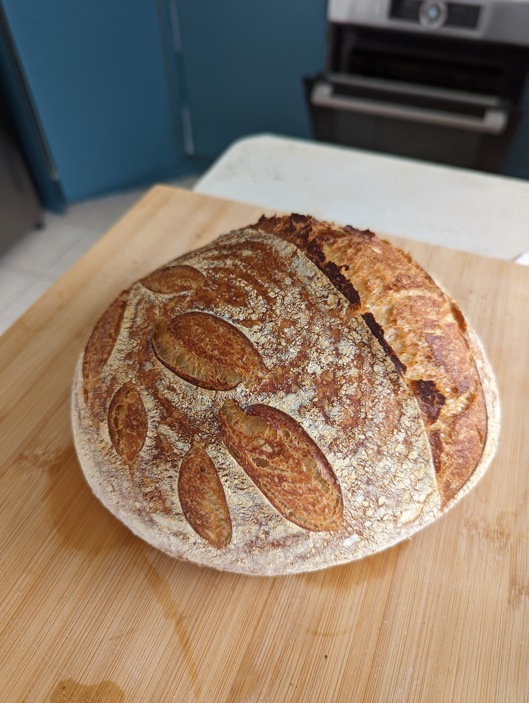

Daniel's White Sourdough Bread

Description
This recipe is for Daniel's standard approach to baking sourdough bread!
It requires a maintained active sourdough starter, and a couple of days work!
This recipe makes two round loaves though ingredients may be halved for a single loaf.
Ingredients
- Sourdough starter (xxx g)
- Flour (xxx g)
- Salt (xxx g)
- Water
Method
Replenish Starter
- Remove starter from fridge two nights before final loaf is to be baked
- Empty starter jar to 630g (mass includes jar)
- Replenish with 100g of wholemeal flour and 100g of tepid-warm water
- Stir to combine. Leave at room teperature overnight, it should hopefully close to double in volume
Create Levain
- Add xx g of active starter to a new container
- Add xx g of whole meal flour and xx g of white flour
- Add xx g of tepid-warm water
- Stir to fully combine
- Leave levain in a sunny spot for 4 hours and 45 minutes
- Replenish Starter according to Stage 1 and return to fridge until next bake
Mix Dough
- Set a large bowl on a scale and zero the scale
- Add all the levain to the bowl. Zero the scale
- Add 600g of tepid-warm water to the bowl
- Mix the levain and water to fully dissolve
- Add 250g of wholemeal flour and 900g of white flour
- Mix to combine and hydrate mix completely
- Cover with a damp teatowel and leave for 20 minutes to autolyse
Knead
- Add 20g of plain salt
- Add a dash of water if needed then mix the salt into the dough
- Empty the dough out onto a clean bench
- Knead the dough using the slap and fold approach for 5 minutes
- Return to bowl, cover with a damp teatowel and encase in a plastic bag
Bulk Fermentation
Shaping
Scoring and Baking
Note, after Stage 2, a 'floating test' may be performed to assess the rediness of the levain to produce a successful sourdough: